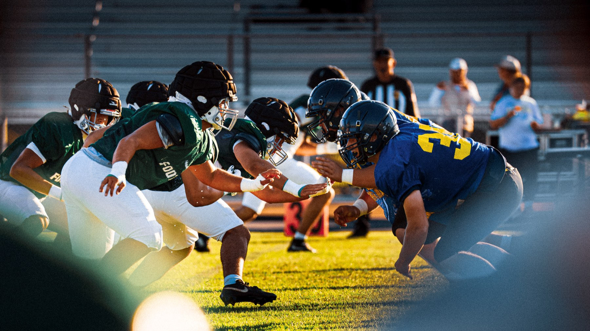
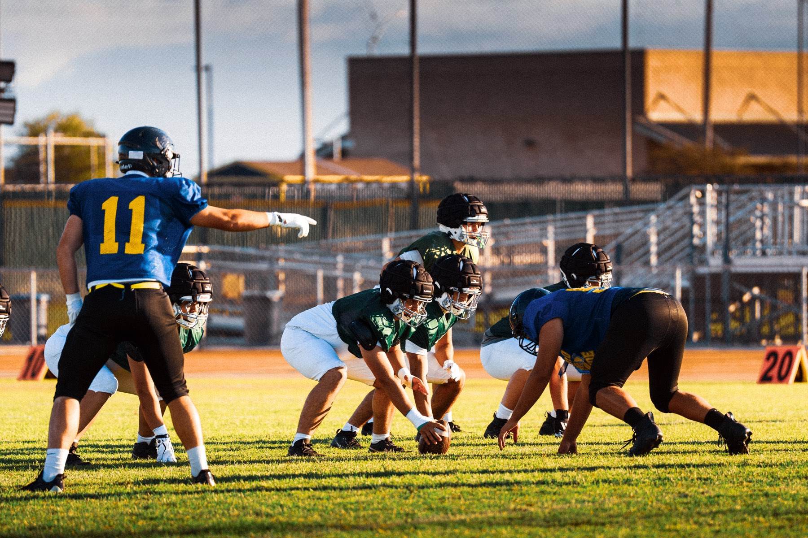
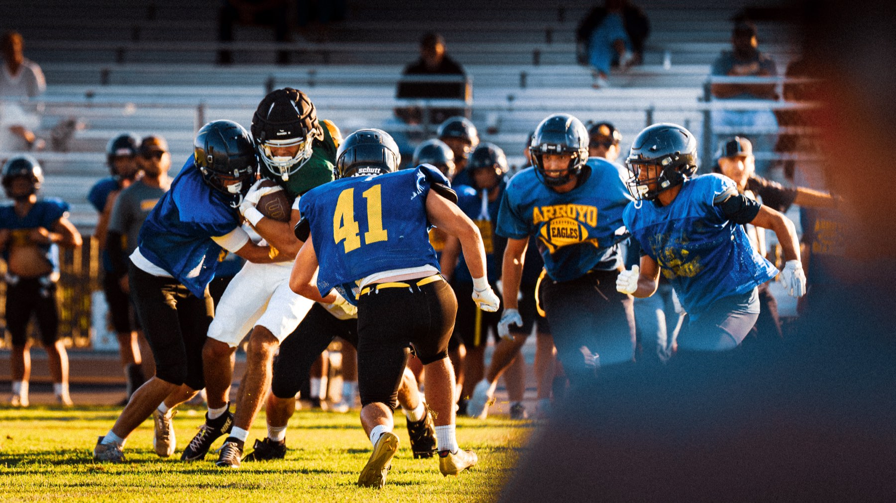
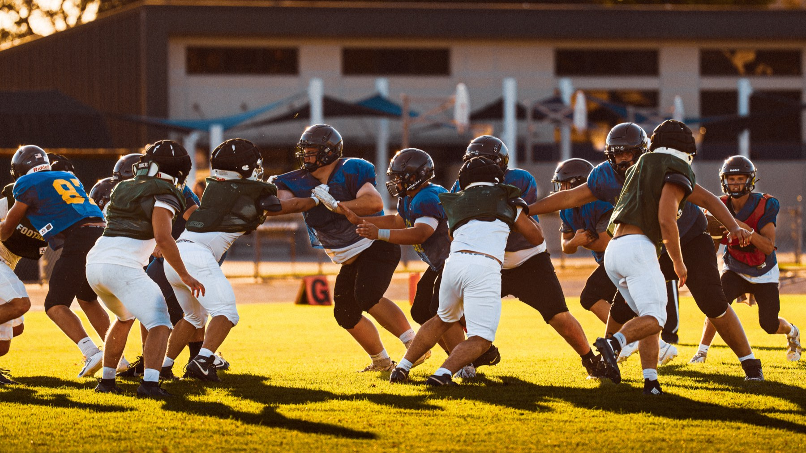
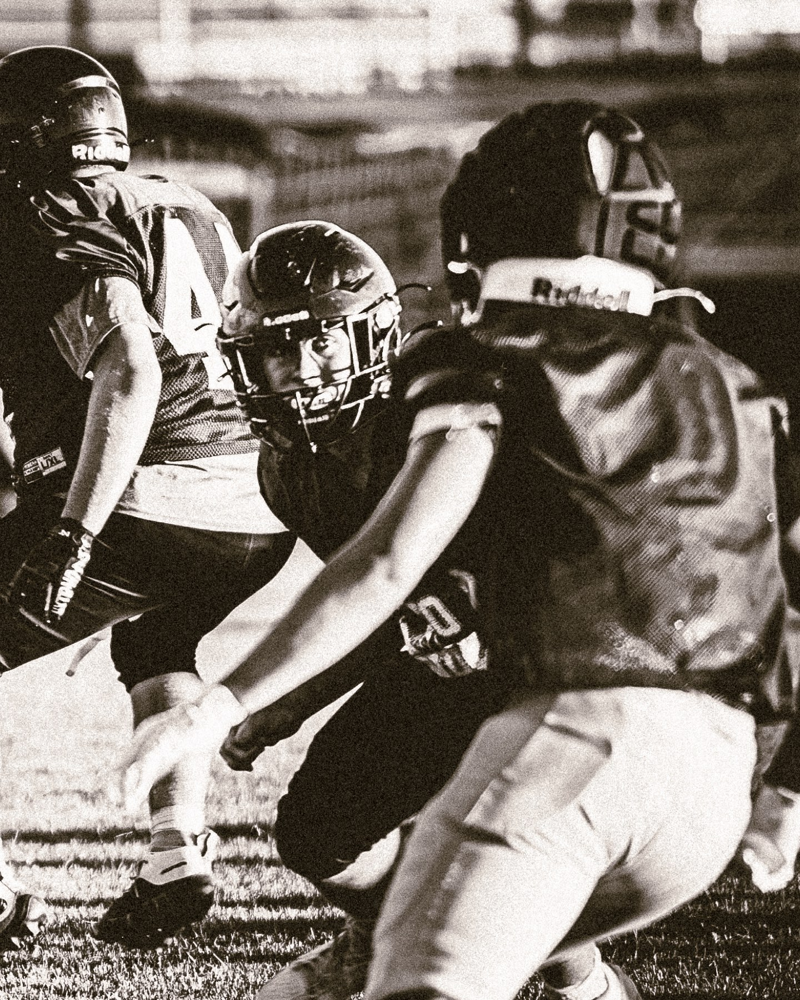
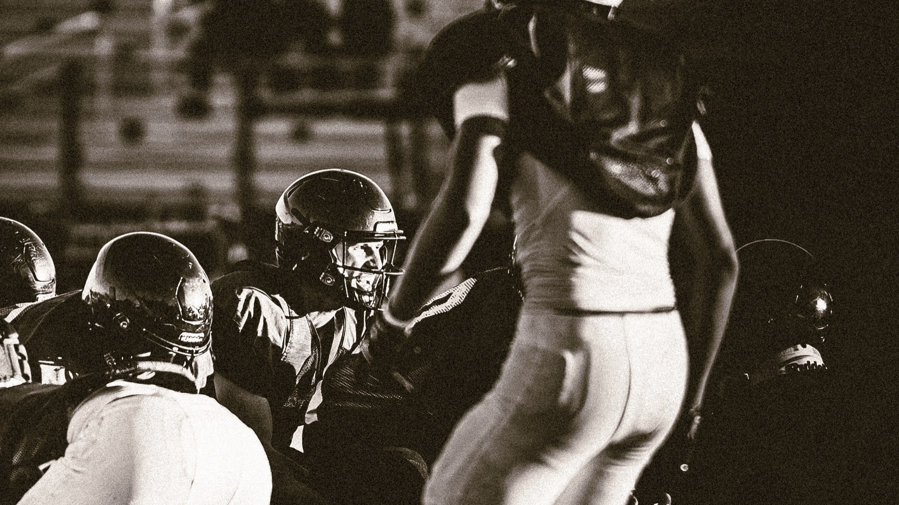
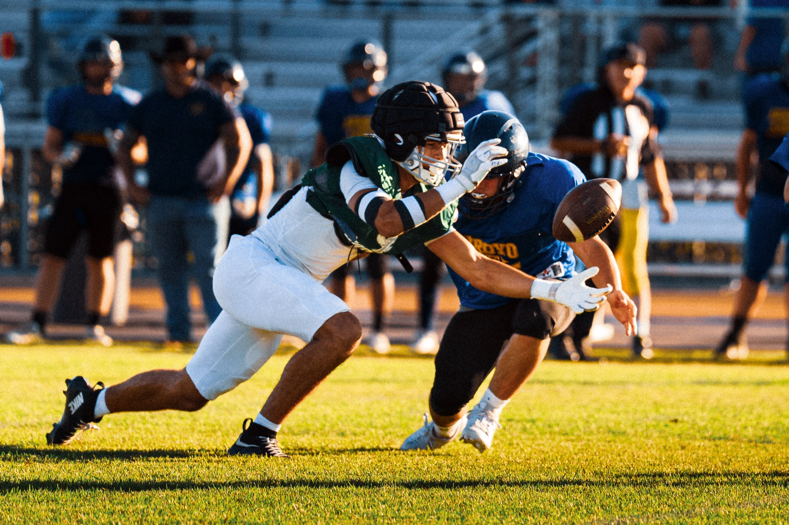
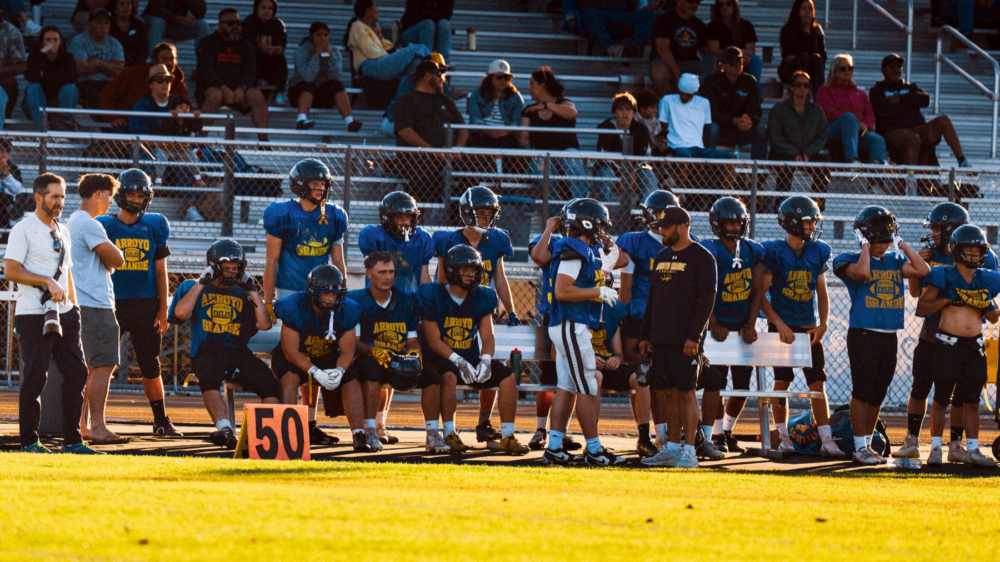
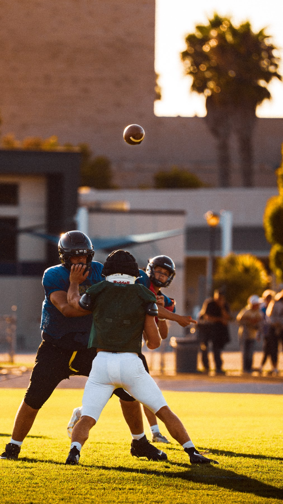
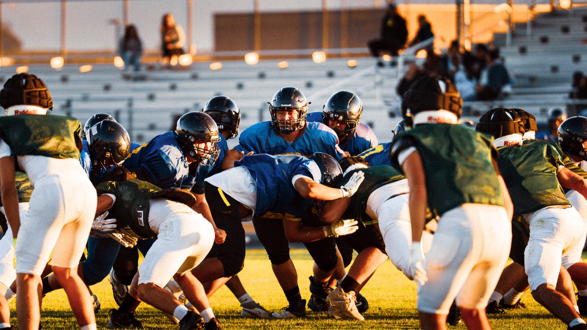

Arroyo Grande and Templeton met for a controlled scrimmage — a chance to test, adjust and begin putting the pieces together before the games start to count.


The intensity built as the evening went on. Each series brought something different: good moments to build on, mistakes to learn from, and a clearer picture of the work still ahead.

That's what a night like this is for.
There was plenty of positive movement from AG, but also the reminder that every new week brings another challenge. The focus now shifts forward — taking what worked, learning from what didn't, and getting ready for what's next.

For the seniors, there's something a little different about this one.


Another season is beginning, but this time every first is also a last.
The last first scrimmage.
The last opening week.
The beginning of one more season together.
Next up is Kingsburg.
Wishing the players and coaches all the best as they turn their attention to the challenge in front of them.

One down. Everything still ahead.



— Simon Kurth | TWM Stories
Follow the season as it unfolds — more from Friday Night Stories →
A Note for TWM Senior Clients
TWM senior clients receive complimentary access to game photographs I happen to capture of them throughout their senior year.
Some of my extended senior experiences also include additional photography and film coverage. Learn more about the Senior Memory Experience →
About TWM Stories
TWM Stories is the Central Coast's story-driven photo and film experience, based in Arroyo Grande and serving families across San Luis Obispo, Pismo Beach, Grover Beach, Nipomo, and surrounding 805 communities. Ngā Kōrero Ora — Living Stories. Every session is built around capturing something real rather than manufacturing something perfect.